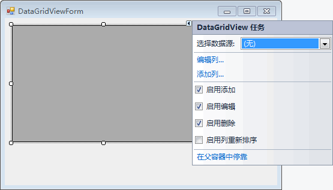
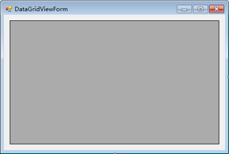
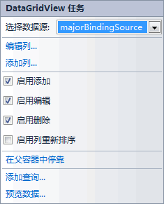
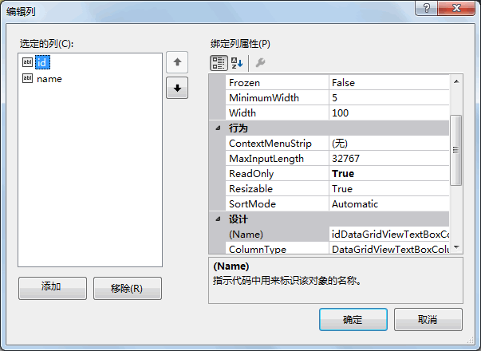
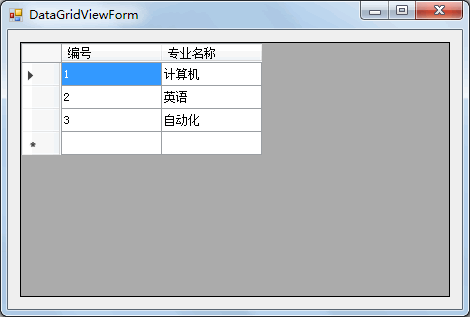
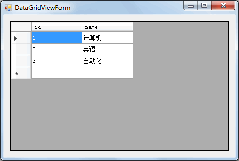

首页 > 编程笔记
C# DataGridView：数据表格控件数据绑定
数据表格控件是 WinForm 窗体应用程序中用于查询时以表格形式显示数据的重要控件，同样数据表格控件也可以使用可视化数据绑定和代码的方式来绑定数据表中的数据，并能在数据表格控件中实现对表中数据的修改和删除操作。
下面分别介绍使用可视化数据绑定方式绑定数据表格控件和使用代码方式绑定数据表格控件。
在“DataGridView 任务”菜单中提供了“选择数据源”“编辑列”“添加列”，以及“启用添加”“启用编辑”“启用删除”“启用列重新排序”“在父容器中停靠”等选项。
其中：
下面通过实例来演示以可视化的方法绑定 DataGridView 控件。
【实例 1】使用可视化绑定的方法将专业信息表中的专业编号和专业名称显示在 DataGridView 控件中，并为表中的列名设置别名。
根据题目要求，完成该实例需要以下步骤。
选择数据源的方法与上一节《C# ComboBox》介绍的在组合框中选择数据源的方法是一样的，由于在前面的使用组合框的实例中已经为应用程序设置过数据源，所以这里 DataGridView 控件中的数据源直接选择已经设置好的数据源即可。
在选择数据源后，“DataGridView任务”菜单的效果如下图所示。
在该对话框的左侧列出了专业信息表（major）中的所有列，右侧列出了列的属性，常用的属性如下表所示。
在上图所示的对话框中将 id 列的列标题 (HeaderText) 属性设置为“编号”、将 name 列的列标题 (HeaderText) 属性设置为“专业名称”。
完成以上 3 个步骤后运行该窗体，效果如下图所示。
从上面的运行效果可以看出，使用可视化数据绑定方式可以快速完成将数据表中的数据显示在 DataGridView 控件中的操作，并可以很容易地对绑定列的属性进行相关设置。
下面通过实例来演示如何使用代码绑定 DataGridView 控件。
【实例 2】使用代码的方式绑定 DataGridView 控件。
根据题目要求，在窗体的加载事件中加入代码绑定 DataGridView 控件，实现的代码如下。
从上面的运行效果可以看出，通过设置 DataGridView 控件的 DataSource 属性即可绑定 DataGridView 控件，但绑定后的 DataGridView 控件中的标题是数据表中的列名。
如果需要更改 DataGridView 控件的列标题，则需要在上面的代码中加入以下代码。
下面分别介绍使用可视化数据绑定方式绑定数据表格控件和使用代码方式绑定数据表格控件。
可视化方式绑定 DataGridView 控件
数据表格控件的可视化数据绑定也是通过控件的任务菜单完成的，如下图所示。

在“DataGridView 任务”菜单中提供了“选择数据源”“编辑列”“添加列”，以及“启用添加”“启用编辑”“启用删除”“启用列重新排序”“在父容器中停靠”等选项。
其中：
- 选择数据源：与组合框控件中选择数据源的操作是相同的。
- 编辑列：用于在 DataGridView 控件中编辑列，包括添加列、给列设置别名等操作。
- 添加列：用于向 DataGridView 控件中添加列，并且可以在 DataGridView 控件中添加不同类型的控件用于显示新添加的列，例如添加一个按钮用于修改或删除表中的数据。
- 启用添加：允许用户向 DataGridView 控件中添加一行，相当于将 DataGridView 控件中的 AllowUserToAddRows 属性设置为 True。
- 启用编辑：允许用户编辑 DataGridView 控件中的值，相当于将 DataGridView 控件中的 Readonly 属性设置为 False。
- 启用删除：允许用户删除 DataGridView 控件中的值，相当于将 DataGridView 控件中的 AllowUserToDeleteRows 属性设置为 True。
- 启用列重新排序：允许启用手动列重新设置，相当于将 DataGridView 控件中的 AllowUserToOrderColumn 属性设置为 True。
- 在父容器中停靠：允许 DataGridView 控件在所在的窗体中最大化。
下面通过实例来演示以可视化的方法绑定 DataGridView 控件。
【实例 1】使用可视化绑定的方法将专业信息表中的专业编号和专业名称显示在 DataGridView 控件中，并为表中的列名设置别名。
根据题目要求，完成该实例需要以下步骤。
1) 窗体设计
创建 Windows 窗体应用程序，并添加一个用于显示专业信息的窗体，如下图所示。

2) 为窗体设置数据源
在上图所示的界面中单击 DataGridView 控件上的“”按钮，在弹出的“DataGridView 任务”菜单中的选择数据源组合框中为 DataGridView 控件设置数据源。选择数据源的方法与上一节《C# ComboBox》介绍的在组合框中选择数据源的方法是一样的，由于在前面的使用组合框的实例中已经为应用程序设置过数据源，所以这里 DataGridView 控件中的数据源直接选择已经设置好的数据源即可。
在选择数据源后，“DataGridView任务”菜单的效果如下图所示。

3) 编辑列
在上图所示的界面中单击“编辑列”，弹出如下图所示的对话框。

在该对话框的左侧列出了专业信息表（major）中的所有列，右侧列出了列的属性，常用的属性如下表所示。
| 属性名称 | 说明 |
|---|---|
| Frozen | 设置用户在水平滚动 DataGridView 控件时列是否移动，默认是 False |
| ColumnType | 设置显示列时的控件类型，默认是文本框 |
| DataPropertyName | 设置绑定数据源中的列 |
| HeaderName | 设置在 DataGridView 列中显示的列标题 |
| Visible | 设置该列是否可见 |
在上图所示的对话框中将 id 列的列标题 (HeaderText) 属性设置为“编号”、将 name 列的列标题 (HeaderText) 属性设置为“专业名称”。
完成以上 3 个步骤后运行该窗体，效果如下图所示。

从上面的运行效果可以看出，使用可视化数据绑定方式可以快速完成将数据表中的数据显示在 DataGridView 控件中的操作，并可以很容易地对绑定列的属性进行相关设置。
使用代码绑定 DataGridView 控件
使用代码绑定 DataGridView 控件时需要为该控件设置数据源 (DataSource) 属性，具 体的语句如下。DataGridView 控件的名称.DataSource = DataTable 对象 ;
如果使用 DataSet 对象为 DataSource 属性赋值，则需要使用 DataSet 对象的 Tables 属性选择指定的数据表。下面通过实例来演示如何使用代码绑定 DataGridView 控件。
【实例 2】使用代码的方式绑定 DataGridView 控件。
根据题目要求，在窗体的加载事件中加入代码绑定 DataGridView 控件，实现的代码如下。
//窗体加载事件
private void DataGridViewForm_Load(object sender, EventArgs e)
{
//数据库连接串
string connStr = "Data Source=.;Initial Catalog=test;User ID=sa;Password=root";
//创建SqlConnection的实例
SqlConnection conn = null;
try
{
conn = new SqlConnection(connStr);
//打开数据库
conn.Open();
string sql = "select * from major";
//创建SqlDataAdapter类的对象
SqlDataAdapter sda = new SqlDataAdapter(sql, conn);
//创建DataSet类的对象
DataSet ds = new DataSet();
//使用SqlDataAdapter对象sda将查新结果填充到DataSet对象ds中
sda.Fill(ds);
//设置表格控件的DataSource属性
dataGridView1.DataSource = ds.Tables[0];
}
catch (Exception ex)
{
MessageBox.Show("出现错误！" + ex.Message);
}
finally
{
if (conn != null)
{
//关闭数据库连接
conn.Close();
}
}
}
运行该窗体，效果如下图所示。

从上面的运行效果可以看出，通过设置 DataGridView 控件的 DataSource 属性即可绑定 DataGridView 控件，但绑定后的 DataGridView 控件中的标题是数据表中的列名。
如果需要更改 DataGridView 控件的列标题，则需要在上面的代码中加入以下代码。
//设置第 1 列的列标题 dataGridView1.Columns[0] .HeaderText="编号"; //设置第2列的列标题 dataGridView1. Columns[1].HeaderText="专业名称";
关注公众号「站长严长生」，在手机上阅读所有教程，随时随地都能学习。内含一款搜索神器，免费下载全网书籍和视频。

微信扫码关注公众号